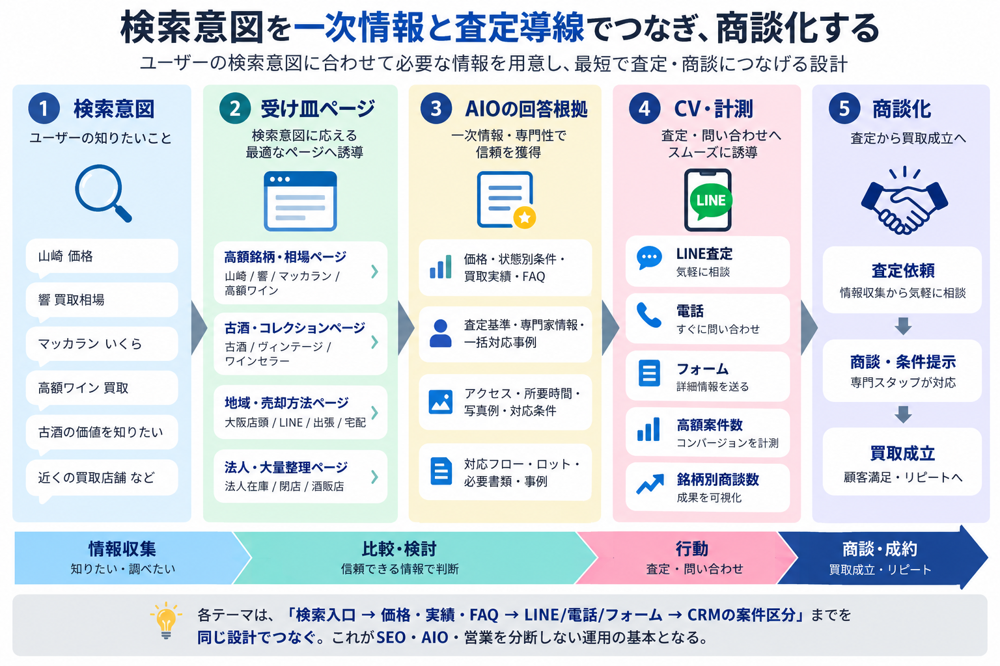

エグゼクティブサマリー
全体の結論と、取り組むべき方向性を先に整理する。
SLIDE REPORT
ザオウリカー SEO・AIO分析 / 競合分析レポート
1 / 42
株式会社蔵王御中
ザオウリカー｜theou-liquor.com
比較対象: ファイブニーズ / JOYLAB / 大黒屋
調査: 2026年8月
Contents
全体の結論と、取り組むべき方向性を先に整理する。
GA4・Search Console・GBP・Webサイトから現状を把握する。
SEO・AIO・CV導線の観点から競合との差を確認する。
優先施策、ページ設計、実行順序を提案する。
Chapter 01
分析から見えた全体結論と、優先して取り組むべき方向性を整理する。
Executive Summary
法人・店舗の買取を事業の中心に置きながら、競合に流れている個人・その他の買取案件の獲得も強化していく方針です。
自然検索やGBPの行動には、既存取引先や営業商談前の信頼確認が含まれる可能性があります。流入量だけで新規案件の獲得力を判断せず、案件種別まで計測する必要があります。
「響30年 買取」「山崎55年 買取」などの高額銘柄関連は既に検索表示されています。参考価格、査定根拠、実績を整えることで、新規ユーザーの買取需要を獲得できる可能性があります。
古酒・レア酒の専門性を強みに、検索意図ごとの受け皿ページ、一次情報、査定導線を整備します。SEO・AIO・営業の各接点をつなぎ、相談から商談化までを一貫して支えます。
Chapter 02
流入・検索・ローカル接点・Webサイトの4つの観点から、現在の強みと課題を確認する。
Self Analysis Framework
Current State
営業経由の法人・店舗案件を中心に、酒類の買取事業を展開している。
個人が酒の買取を検討する際、買取の専門性や対応範囲がWeb上で十分に伝わらず、比較検討時に競合へ流れている。
個人の買取検討者に、専門性・買取実績・査定の安心感が伝わる情報と導線を整える。
高級ワイン、ワインセラー、法人在庫、店舗整理など、高い商談価値を持つ案件を優先する。
ヒアリングにて、`法人・店舗の買取事業を維持しつつ、競合に流れている個人・その他の買取案件を獲得したい` という意向を確認した。
Traffic & Conversion
集計期間: 2026年1月1日〜7月14日
全15,041セッションの54.1%。BtoB営業の事前調査を含む最大接点。
エンゲージメント率。商談化との因果は現状の計測だけでは判定しない。
567ユーザーが発火。実問い合わせ完了とは別イベントとして扱う。
問い合わせ完了5件、買取査定依頼完了3件。2026年1〜6月。
トップページに加え、「山崎55年」「ヴィンテージマッカラン」など高額・希少ボトルの記事が流入を担う。営業先・法人担当者が専門性を確認する入口としても機能し得る。
`form_submit` と実問い合わせ完了を分け、電話・LINE・フォーム完了を共通のCV一覧で月次集計する。加えて「法人 / 個人」「営業起点 / 検索起点」「大ロット / 通常」を営業側で記録する。
So What: KPIは問い合わせ件数だけではなく、`法人・大ロット・高額案件の商談数 / 成約額` で置く。営業起点の案件もCRMで記録し、自然検索を過小・過大評価しない。
出典: GA4（2026年1月1日〜7月14日）、ザオウリカー買取アナリティクス（2026年1〜6月）、打ち合わせ議事録
Search Ranking & Intent
集計期間: 2025年1月1日〜2026年7月31日
表示1,339回、クリック58回。認知検索では1ページ目を維持している。
平均4〜5位台。専門知識のコンテンツは検索上位を作れる状態にある。
表示195回、クリック26回、CTR13.3%。指名を含む買取意図は強い。
表記ゆれを含む表示3,334回。高額案件の商談機会を取り切れていない。
指名・情報系・指名を含む買取系では上位を取れている。一方で「響30年 買取」「山崎55年 買取」など銘柄名の買取検索でも表示されており、蔵王リカーを認知していないユーザーへの新規接点はある。順位とCTRを改善できれば、新規案件の獲得余地が大きい。
銘柄名・買取意図の検索において表示機会が確認できており、対策を強化することで、新規ユーザーの買取需要を獲得できる可能性は十分に見込める。
Local Search & Actions
集計期間: 2026年2月〜7月
通話・ルート・サイトクリックの合計。個人・法人・営業起点は未分離。
全行動の58.8%。持ち込み、営業訪問、仕入れ相談前の確認を含み得る。
プロフィールからサイトへ遷移した数。フォーム・LINEへの導線改善余地がある。
月別では3月を頂点に減少。営業日・掲載内容・計測期間を確認する。
行動の中心は「ルート検索」であり、来店・購入検討におけるローカル接点としてGBPは機能している。
大阪での店頭買取、専門査定、持ち込み可否をプロフィール・投稿・写真で明示する。店舗で買い取れることを伝え、競合と差が出る来店買取の強みを可視化する。
Website Analysis
ページ別閲覧で2位。査定方法そのものへの関心を捉えられている。
ページ別閲覧で3位。買取を検討するユーザーの受け皿として機能している。
関連ページに75閲覧があり、高額・一括整理ニーズの入口になり得る。
上位ページに明確な専用ページが確認できず、案件が発生しても受け止めにくい。
現状サイトは、`LINE査定・買取査定` の基本導線には需要がある。一方で、高級ワイン・ワインセラー・法人在庫など、単価の高い買取目的に合わせた専用ページと訴求を強化する余地が大きい。
Current Issues
お酒買取 → 酒種 → 買取実績 へ飛びやすく、`ブランド` `銘柄` `相場` `FAQ` の中間ニーズを受け止めにくい。
既存の実績や専門知識が点在し、`比較・納得・問い合わせ` までを一連の導線として見せ切れていない。
銘柄入口
価格・相場での比較
FAQでの不安解消
Chapter 03
検索構造、AIに引用される情報、査定への導線を比較し、ザオウリカーが取るべきポジションを定める。
SEO & AIO Benchmark
競合との差は、専門性の有無ではなく、`ユーザーが検索した言葉に対して、価格・実績・不安解消までを一つのテーマで回答できるか` にある。
Overall SEO Assessment
公開ページをベースにした相対評価
専門性はあるが、検索意図別の受け皿に改善余地。
価格・実績・関連テーマを広く展開。
カテゴリ、価格、実績、FAQの粒度が揃う。
銘柄・価格・実績を大規模に更新。
SEOでは「専門性」だけでなく、`検索意図ごとのページ構造・網羅性・価格情報の出し方`で競合との差が出ている。
AIO Citation Readiness
公開ページをベースにした相対評価
独自資産は強いが、回答・価格・FAQとして点在。
高価買取の根拠と実績を回答材料として提示。
カテゴリ・価格・FAQが比較検討を支える。
価格DBとブランド信頼が回答根拠になる。
改善余地: `質問形式の回答・価格表・査定根拠・専門家プロフィール・第三者言及`を整え、古酒・レア酒の独自性をAIが引用しやすい情報へ変える。
AIO Score Breakdown
公開ページをベースにした相対評価
ポイント: ザオウリカーは独自性が高い。AIOでは、その専門性を`Q&A・価格表・買取実績データ`としてAIが読み取りやすい形に変換する必要がある。
SEO Structure
情報はあるが、銘柄・価格・状態別の検索入口が独立ページとして不足している。
検索入口から価格・不安解消・査定までを同じテーマ内でつなげている。
分析からの示唆: 次に増やすべきは酒種ページではなく、`銘柄 → 価格・相場 → 実績 → FAQ` の中間層である。この階層が、SEOとAI回答の両方で引用される根拠になる。
Top Page Comparison
分析からの示唆: ザオウは酒種そのものは揃っている。次に必要なのは、`酒種の追加`より`価格・相場・銘柄への入口`を明確にすることだ。
Category Page Gap
ウイスキー、ワイン、ブランデー、日本酒、焼酎、スピリッツ、リキュール、その他の酒種で整理されている。
例: 山崎12年
カテゴリ下で、銘柄・状態・価格に関する個別の検索意図を受け止める。
AIOの示唆: 「古い山崎は売れるか」「箱なしでも買取可能か」といった質問に、カテゴリページとその下層ページで直接答えられる構成へ変える。
Brand Page Gap
「検索入口」と「回答根拠」を同じページで接続する。優先度は、Search Consoleで表示機会がある`山崎` `響`に加え、高額ワイン銘柄へ展開する。
Brand Keyword
分析: 優先度Sは `山崎買取` `響買取` `マッカラン買取`。ここは競合比較でも差が見えやすく、作る効果が説明しやすい領域です。
Price Content
分析: ザオウは `価格表を作る` というより、`実際の査定データを価格・相場ページとして再編集する` ほうがブランドに合っています。
Proof Content
分析: ザオウの差別化は `実績の量` だけでなく `実績の中身の専門性` にあります。構造さえ整えば、ここは競合に対して十分戦えます。
FAQ / Column
分析: FAQは後回しではなく、`高く売れる条件` `古酒でも査定できる理由` `箱なし・ラベル傷みの扱い` などを先に整えると、SEOとAIOの両方に効きます。
Chapter 04
サイト構造、優先ページ、計測、SEO・AIOの順に、実行可能な改善プランへ落とし込む。

High Value | Action Detail
マッカラン買取
マッカラン18年
買取価格・相場
実際の買取実績
LINE査定
「買い取りました」で終わらせず、銘柄ページから実績へ内部リンクし、検索評価・AI引用・査定導線を集約する。
High Value | Action Detail
法人取引を含むため、確定金額の一律掲載はしない。`参考価格 + 査定根拠 + 個別条件で変動する理由`をセットで提示し、最終金額はLINE・電話・フォームで個別に案内する。
Collection | Action Detail
ページ冒頭で質問への答えを明示。
価格・条件・相場を整理。
箱なし・古酒・開封済みに回答。
査定基準・経験・実績を示す。
古いウイスキーは売れるか、父のコレクションを売りたいなど、想定質問ごとに価格・実績・FAQ・査定への導線を揃える。
Collection | Action Detail
「古酒・レア酒の専門買取」という特徴を、自社サイトと第三者の両方で確認できる状態へ近づける。
Local | Action Detail
GBPには大阪での店頭買取・専門査定・持ち込み可否を明記する。Webサイトは売却方法別に、LINE・電話・フォームへ迷わず進める導線を用意する。
BtoB | Action Detail
法人・閉店関連は、議事録から設定した検証テーマであり、Search Consoleの実測需要とは分けて扱う。営業での訴求とCRMの流入元・案件種別・ロット記録を連動させて検証する。
Keyword Strategy
55語の全一覧は、スプレッドシート用CSVで確認する。指名5語・一般10語・高額ウイスキー10語・希少ウイスキー10語・高額ワイン10語・BtoB検証10語で管理する。
Content Plan
山崎・響・白州・マッカラン、年数別・相場・売却条件。
旧ボトル、箱なし、液面低下、ヴィンテージ、保管状態。
ワインセラー、5大シャトー、ロマネコンティ、オーパスワン。
LINE、持ち込み、出張、閉店、在庫、遺品・整理。
36本の全一覧は、スプレッドシート用CSVで確認する。各記事は、`結論 → 査定根拠 → 関連する価格・実績 → LINE査定`の順に統一し、情報収集を査定相談へつなげる。
CEP & Brand Guide
ブランドコンセプト: `価値が分からない古酒・レア酒まで、専門査定と市場知見で適正に見極める買取店`。
Recommended Structure
総合入口
ウイスキー / ワイン / 日本酒
山崎 / 響 / 白州 / マッカラン
古酒 / 大量買取 / 遺品整理
比較と納得の入口
証拠と不安解消
Implementation Roadmap
法人・大ロット・高額案件の定義 / 営業起点を含むCV分類 / SEOギャップTOP20
法人在庫処分 / ワインセラー一括買取 / 飲食店閉店整理 / 重点銘柄・相場ページ
ワインセラー・空き瓶 / 中国酒 / 専門査定データ / FAQ / AIO向け構造化
Page Planning
初期合計は`70ページ`。既存の買取実績は新規量産せず、銘柄・価格・コラムから内部リンクして再利用する。公開後は`案件単価` `検索需要` `商談数`で評価し、成果が出た銘柄を追加して`100〜130ページ`へ拡張する。
Priority Matrix
法人在庫処分、飲食店閉店、酒販店・ワインセラーを対象に、相談条件と実績を明示。
山崎・響・白州・マッカラン、高級ワインを、法人相談にも使える実績・査定根拠付きで整備。
法人 / 個人、営業起点 / 検索起点、案件単価・ロットをCRMで共通管理する。
専門性とAI引用候補としての情報整備を中長期で進める。
SEO to AIO
AIO対策の本質は、`SEOで作った一次情報を対話・文脈で使える回答データへ変換すること` です。添付のJOYLABツール診断でも、構造化データ・直接回答形式・サイテーションが改善観点として示されています。
Final Conclusion
基盤
検索入口
比較と納得
一次情報の証拠
信頼とAIO対応
CVへ接続
`法人・大ロット・高額酒を、専門査定と自社オークションで安心して任せられる` という固有価値を、検索エンジンとAIの両方が理解できる構造へ変えることが最初の一手です。